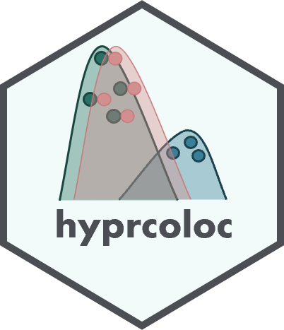

Authors and Citation
Citation
Source: inst/CITATION
Foley C, Staley J, Green P, Sun B, Kirk P, Burgess S, Howson J (2021). “A fast and efficient colocalization algorithm for identifying shared genetic risk factors across multiple traits.” Nature Communications, 12(1), 764. doi:10.1038/s41467-020-20885-8.
@Article{hyprcoloc,
author = {C.N. Foley and J.R. Staley and P.G. Green and B.B. Sun and P.D.W. Kirk and S. Burgess and J.M.M. Howson},
title = {A fast and efficient colocalization algorithm for identifying shared genetic risk factors across multiple traits},
year = {2021},
doi = {10.1038/s41467-020-20885-8},
journal = {Nature Communications},
volume = {12},
number = {1},
pages = {764},
}